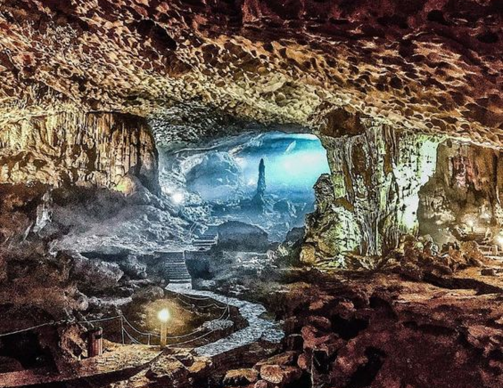
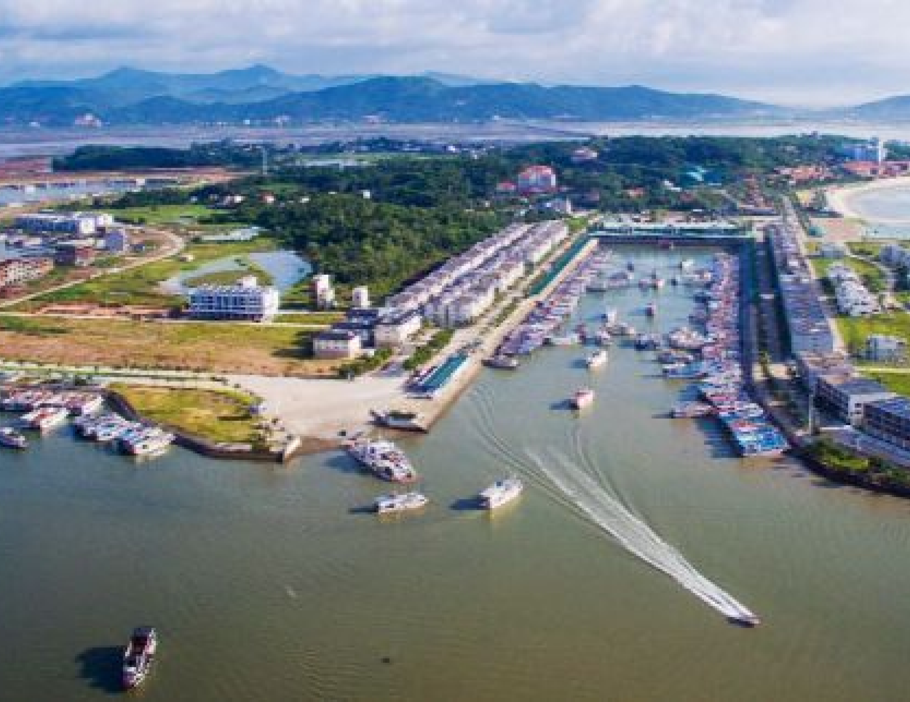

QUANG NINH
QUANG NINH
Located in the northeastern region of Vietnam, Quảng Ninh is renowned for its stunning natural beauty and rich cultural heritage. The province is home to the famous Ha Long Bay, a UNESCO World Heritage site known for its dramatic limestone formations and picturesque seascapes. Quảng Ninh offers a blend of vibrant local traditions and modern attractions, making it a captivating destination for both leisure and exploration.
With its diverse landscapes, from serene beaches to lush mountains, Quảng Ninh promises an unforgettable experience for visitors.
UNMISSABLE ATTRACTIONS

bo hon island
Hang Sung Sot, or Surprise Cave, is a stunning attraction in Ha Long Bay, Vietnam. Known for its impressive stalactites, stalagmites, and vast chambers, this cave was discovered by French explorers in the early 20th century. Its striking natural formations and intricate rock patterns make for an unforgettable experience, highlighting the natural beauty and geological marvels of Ha Long Bay.
Adress:
Bo Hon Island, Ha Long Bay, Quảng Ninh Province, Vietnam. Accessible by boat from Ha Long City.
HA LONG BAY
Ha Long Bay in Quang Ninh, Vietnam, is a UNESCO World Heritage site known for its limestone islands, emerald waters, and scenic beauty. With over 1,600 islands, it features stunning rock formations, clear waters, caves, beaches, and floating villages. Address: Ha Long Bay, Quang Ninh, Vietnam. Accessible by road and boat from Ha Long City.
Adress:
Ha Long Bay, Quang Ninh, Vietnam. Accessible by road and boat from Ha Long City.

Tuan Chau Island
Tuan Chau Island, located in Ha Long Bay, Quảng Ninh Province, Vietnam, is renowned for its beautiful beaches and vibrant resort atmosphere. The island features a range of attractions, including an amusement park, a marina, and scenic coastal views. It offers a perfect blend of relaxation and adventure, serving as a gateway to the natural wonders of Ha Long Bay.
Adress:
Tuan Chau Island, Ha Long Bay, Quang Ninh, Vietnam. Accessible by road from Ha Long City.
HIDDEN GEMS OF HANOI

HANOI - NINH BINH - HA LONG
4 days
Availability : Every day
1 people